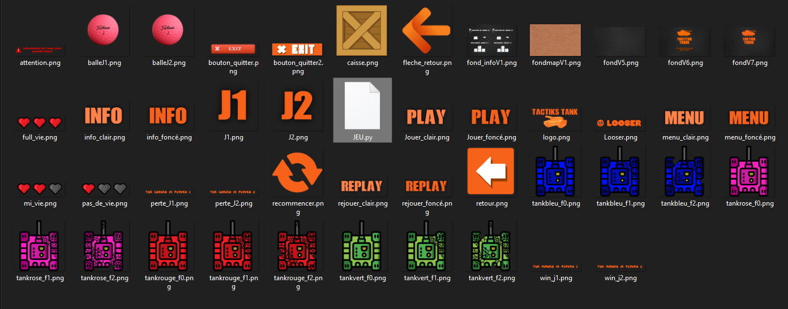

Vous trouverez sur cette page les fichiers du jeu et toutes les consignes pour y jouer.
Dans un premier temmps vous devrez utiliser IDE permantant de modifier mais égalament de lire du pyhton.
je vous conseille d'utiliser EDUPython, un IDE gratuit.
Ouvrez dans un premier temps le fichier JEU.py grâce à votre IDE.

Une fois dans l'IDE (ici EDUPython) exécutez le programme et vous pourrez jouer et vous amuser.